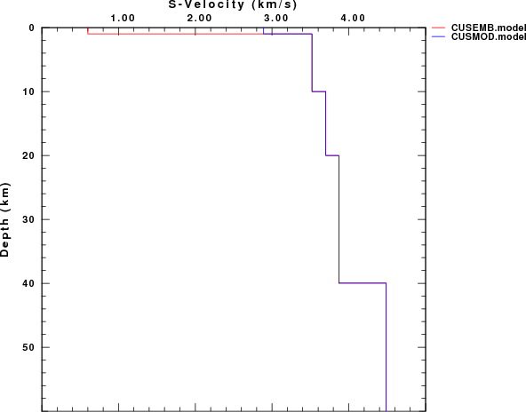
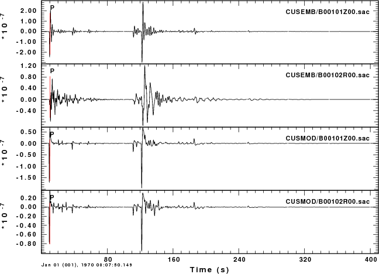
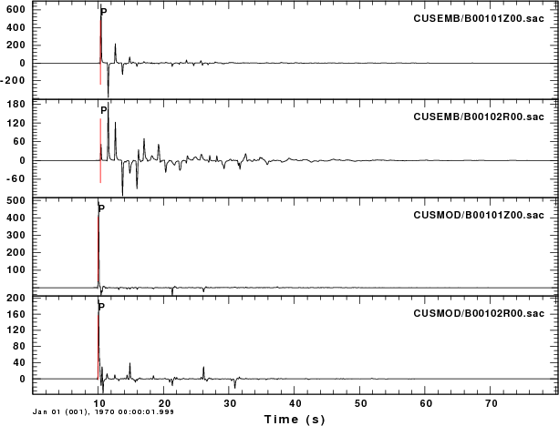

Introduction
This example considers the effect of shallow sedimentary deposits on
the observed motions. this effect is especially strong on the
radial components, and hence will strongly influence the computed
receiver function.
Example
Models
The following figure compares the two surface models. The
CUSMOD.mod is a typical upper crustal model, while the CUSEMB.mod has
the upper 1 km replaced by low velocity sediment as a approximation to
the velocity structure at Memphis, Tennessee. The figures are

Teleseismic P-wave Signal
The first run creates a broadband teleseismic signal for a 600 km deep
source recorded at an arc distance of 50 degrees. This signal has the
effect of the source model above the source, the geometrical spreading
and attenuation of the teleseismic signal, and the effect of the
receiver crust structure.

Receiver Structure Response
By using the -NOTEL -NOSRC command
line flags, the effect of the sediment structure can be seen
